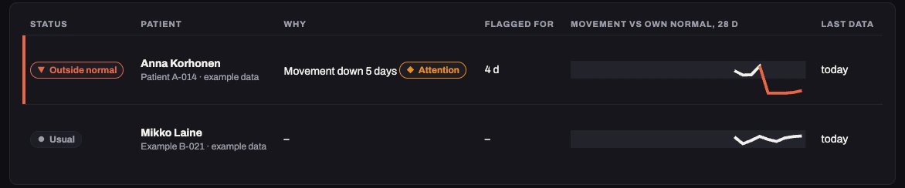

Lanvi
Beyond the Clinic · Junction 2026
press → to begin
This is Anna.
We made her up.
Six weeks of treatment for depression.
Every weekday, somebody looked at her.
Then the door closed.
Next appointment: in six weeks.
On the way home she finds a fox cub,
alone in the snow.
She picks him up.
He steps into her phone.
He asks for one small thing a day.
No score. No streak. A bad day costs nothing.
This is not a habit tracker.
She said yes.
So while she plays, the phone keeps count.
Numbers only.
Never pictures.
Compared with one thing:
her own normal.
November.
One night,
she opens it.
The help numbers
open at once.
By morning,
her clinic knows.
Not at her next appointment.
Next morning,
her nurse calls.
“Anna, I read your note.
I'm here.”This time, she doesn't
wait six weeks.One way it can go. What happens next is the clinic's decision.
Behind the fox: what we call the mind.
Rules notice.
Plain rules we can explain.
Two models weigh.
The clinic's own model, and Gemini, which also reads the face numbers.
Code guards both.
Help never waits for a model.
40 generated cases, read by the real models.

- Live: server, clinician page, both models, the alert. A real iPhone has sent its data.
- Anna is example data. Nothing is tested with patients.
Whether these numbers follow depression
is the study we want to run with you.
30 people after TMS · 12 weeks · each compared only with themselves
Days later,
she opens it again.
“I kept the light
on for you.”
Lanvi
The fox you rescue keeps
the light on for you.
lanvi.app